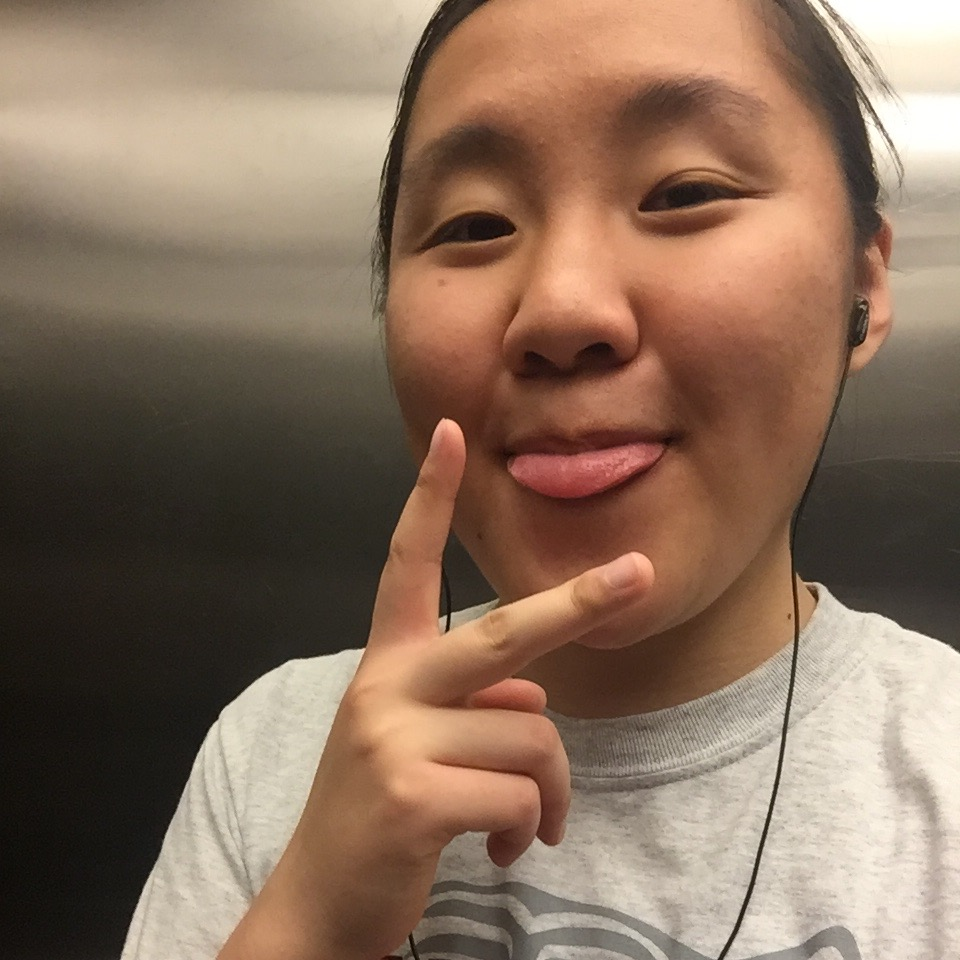
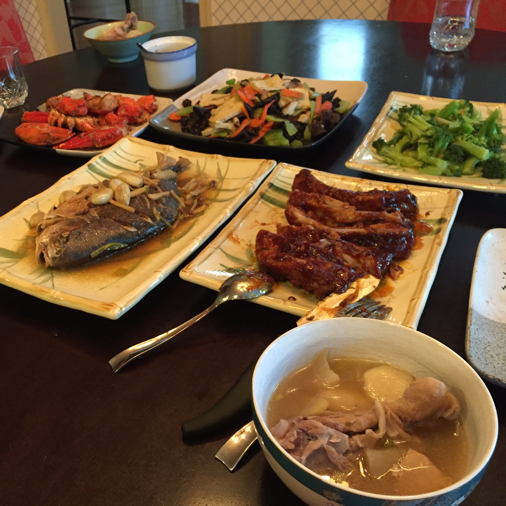

Listened to: Millennial
Stopped once during the run to stretch, but other than that my legs felt pretty good. There was this other dude who was running the other direction, and we kept passing each other. It was kinda motivating, and it was nice to have something to look forward to (passing him again) over the monotony of the run. Running is super boring!! There's a part on the map that's just a line sticking out, and I ran down that path and back up because I was just so bored of going in laps.

I picked Alex up from the airport today. It was the first time I drove myself there. The road between the arrival pick-up place and the actual highway was called "Unnamed Road," and Alex asked what I would name it and then started jokingly suggesting people's names. I'd name it something terrible because I made a bunch of wrong turns or lack of turns when we were leaving the airport, but we got back on track soon enough. We ate dinner at my place and then drove back down to Princeton, unfortunately missing s'mores at Jeff's. We did although manage to snag like 20 yogurts from my parents as well as a bunch of leftovers. It's nice living close to home. 
Home Prev